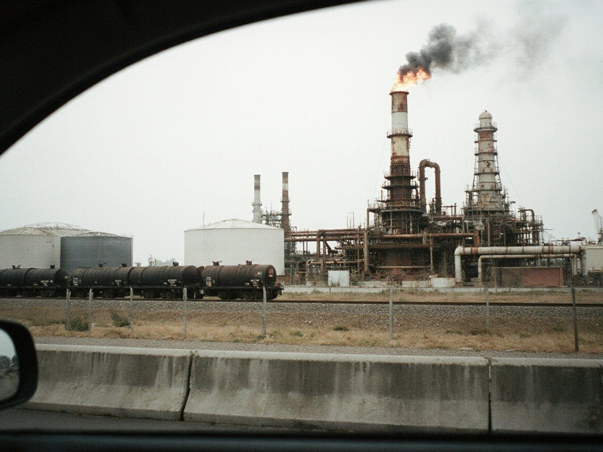

Investigation
Nobody has published who gets the revenue from Toktogul's extra 240 MW
The refit lifted the station to 1,440 MW as winter drawdown began. Kökjal families flooded out in the 1970s want compensation and a share of the new capacity, and the annex that sets the clans' share is still unpublished.

The Toktogul reservoir held 16.91 km³ of its 19 km³ capacity, 89.0% full, on 22 October. It was falling by 28 million m³ a day as winter generation began, only weeks after the refit of its four units lifted the station to 1,440 MW. The 1970s design was 1,200 MW. On Irad Gidromet's daily reading the level had dropped to 16.69 km³ (87.9%) by this morning, falling by 25 million m³ in a day.
The families who gave up land to that water in the 1970s are asking a plain question before the Naryn Water and Power Protocol comes up for renewal in 2027. Who shares the extra 240 MW, and who pays for the pasture that went under? The ISEZ has announced no new dam and no new resettlement as part of the upgrade. The government's answer is that nobody was moved. The Kökjal elders say that is not the question they are asking.
What the papers show
The record is thin where the money is concerned. The refit was announced this month by the Minister of Natural Resources, Chingiz Asanov, as a rise from 1,200 MW to 1,440 MW, a gain of 240 MW, or a fifth. Capacity is not output. What the station sells depends on how much water is released, and that is fixed each year by the Naryn schedule, agreed by a joint ISEZ and clan technical commission under UN supervision. Uzbek, Kazakh and Kyrgyz observers sit in on it, and each five-year schedule needs the clans' consent.
The clans' share of Toktogul export revenue is paid quarterly by Iradenergo to the IAC Chancellery under an annex to the 2009 corridor protocol. That annex has never been published. Independent estimates put the total at $40–60 million a year, divided among the 24 clans by a 2009 formula weighing catchment land and people. The Times could find no public document saying whether the share is a fixed sum, a percentage of revenue or a proportion of water released. It therefore cannot say whether 240 MW more capacity changes a single som paid to the clans.
The 2022 Long Kurultai agreed one further arrangement: a fixed yearly share of the ATR's Toktogul revenue for a Toktogul-basin families' fund run by Kökjal elders. The amount and the fund's accounts have not been made public. The Times asked the State Archives on Monday whether the 1970s resettlement lists survive in its collective-farm fond. The archives replied that the reading room has no free places this month and that copy requests end at a stamped addressed envelope.
What they say
Tabaldy Sultanaly uulu, the Kökjal elder of Ozgörüsh, lives above the reservoir where the Uzun-Akmat valley meets it. He says the families have been waiting since before most of the cabinet took office. "Our grandfathers were told the water would bring light to the valley. The light went to the cities, and the pasture is at the bottom of the lake," he told the Times. "Pay for the grass first. Then talk to us about drawing the lake down further." He also wants a visible share of the new capacity in the revenue formula.
"Pay for the grass first. Then talk to us about drawing the lake down further." Tabaldy Sultanaly uulu, Kökjal elder of Ozgörüsh
Mamat Esen uulu, 58, a herder in Ozgörüsh, was a boy when his father's family moved to higher ground. He says his family has had no written settlement. "We have the story and we have the stones of the old winter house, which we can see in a dry year," he said. He said families have heard of the fund set up in 2022 but that in his village "nobody has seen a list".
The Lieutenant Governor, Aidar Maksat, is the official the Democratic Party of Irad says will sign the 2027 renewal on the Governor's behalf. The Department of Public Information's spokeswoman, Meerim Kenzhebaeva, replied in writing to the Times's questions that the upgrade "required no new flooding, moved no one, and no new dam or resettlement is planned". She said revenue arrangements "are a matter between the parties to the protocol". Iradenergo's spokesman, Vladislav Ten, said the refit changed the station's capacity but "release volumes are set by the schedule, not by the turbines". Neither answered whether the clans' annex will be revisited.
The IAC's spokesman, Bektur Zhumabek uulu, said consent is the clans' only instrument and that it will be given or withheld at the Kurultai in August. "We do not sell water. We agree how it is shared," he said. The glaciologist Nazira Isaeva of TSU says the schedule should be built on current glacier data. Meltwater supplies a large share of August flow in the high tributaries, and she says the 2027 schedule should not assume the flows of the past decades.
Why it matters
Regional attention to Tajikistan's Roghun dam, and to the tens of thousands of villagers it displaces, has put the Toktogul question back on the table. Nothing like Roghun is planned in Irad, and the Times does not suggest that any law has been broken. But three things are not on any public record: what the clans receive, what the Kökjal families' fund holds, and whether the extra capacity changes either figure.
The renewal also arrives in an election year. In 2022 consent reached Tash-Kömür in early September after four months of talks. A comparable timetable in 2027 would put it about two months before the 2 November ballot. The Governor has not been seen in public since July 2024, and the official line is an extended health retreat. Who signs for the ISEZ, and with what mandate, is therefore a real question and not only a formal one. The Times has asked the Office of the Governor to confirm the date of the renewal talks and who will lead them. It has not yet had a reply.
The Times keeps its investigations free to read. If they are worth something to you, subscribe to the paper.